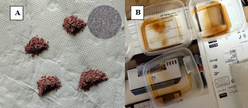
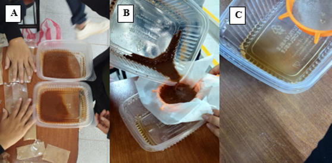
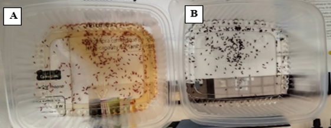

Materiales y Métodos
Elaboración de etiquetas
Para la identificación eficiente de los tratamientos, se elaboraron etiquetas mediante el paquete huito de R, una herramienta de código abierto que permite generar etiquetas agrícolas reproducibles y personalizables por capas. Previamente, se organizó la libreta de campo utilizando la plataforma interactiva Tarpuy, que facilitó el planeamiento experimental. La información correspondiente a los tratamientos (número, variedad, dosis de infusión de canela, fecha de siembra y observaciones relevantes) fue registrada en una hoja de cálculo de Google Sheets, la cual fue cargada al entorno de R mediante el paquete googlesheets4.
Durante la elaboración de las etiquetas, se incorporaron imágenes referenciales obtenidas de internet, tales como logotipos de la universidad, asimismo se mencionó las variedades de lechuga (criolla y morada), las dosis de canela utilizadas, y una escala de medición. Estas etiquetas se imprimieron y colocaron en los recipientes de germinación, lo que permitió una identificación clara, estandarizada y funcional de las unidades experimentales, facilitando la organización y el seguimiento del experimento.
Materiales
- Semillas de lechuga morada y lechuga criolla (verde)
- Canela molida
- Agua destilada estéril
- Vasos o frascos para imbibición
- Tapers transparentes con tapa (bandejas de germinación)
- Papel absorbente (toalla blanca)
- Hervidora eléctrica
- Balanza
- Colador fino
- Jeringa de 20 ml
- Pinzas esterilizadas
- Alcohol al 70 % para desinfección
Selección e instalación del material vegetal
Las semillas utilizadas corresponden a dos variedades de lechuga: criolla (verde) y morada. Estas fueron adquiridas en la agroveterinaria “La Casa del Ganadero”, ubicada en la ciudad de Chachapoyas, región Amazonas. Se realizó una selección manual previa, descartando aquellas semillas con daños visibles, impurezas o signos de deterioro. Solo se consideraron las semillas con mayor integridad física y apariencia vigorosa.
Una vez seleccionadas, se distribuyeron 25 semillas por taper, alcanzando un total de 600 semillas.

Preparación de las infusiones de canela
Para la preparación de las infusiones, se calentó agua destilada hasta ebullición utilizando una hervidora eléctrica. El agua caliente fue dividida en seis recipientes plásticos, donde se añadieron las cantidades correspondientes de canela molida (5 g, 10 g y 15 g por cada 100 mL), generando tres tratamientos por cada variedad.
Las mezclas se dejaron reposar hasta enfriarse a temperatura ambiente. Posteriormente, se filtraron con un colador fino para retirar los residuos sólidos de canela, dado que el tamaño pequeño de las semillas requería una solución libre de partículas para facilitar el conteo y la siembra.

Tratamiento de imbibición
Una vez filtradas, las infusiones fueron utilizadas para el tratamiento de imbibición de las semillas. Las semillas de ambas variedades se colocaron en vasos con las respectivas soluciones, y permanecieron en remojo durante 8 horas a temperatura ambiente. Este proceso permitió la absorción inicial de agua e ingredientes activos contenidos en las infusiones, previo al proceso de germinación.
Las mezclas se dejaron reposar hasta enfriarse a temperatura ambiente. Posteriormente, se filtraron con un colador fino para retirar los residuos sólidos de canela, dado que el tamaño pequeño de las semillas requería una solución libre de partículas para facilitar el conteo y la siembra.

Preparación del sistema de germinación
Simultáneamente, se acondicionaron los recipientes plásticos (tapers) utilizados como bandejas de germinación. Se colocó una lámina de papel absorbente en la base de cada taper y se humedece uniformemente con 20 mL de agua destilada estéril, utilizando una jeringa para garantizar precisión. En total, se prepararon 24 tapers, correspondientes a los ocho tratamientos con tres repeticiones cada uno.
Diseño experimental
Las semillas tratadas fueron sembradas en los tapers preparados, distribuyendo 25 semillas por taper. Se utilizaron pinzas estériles para manipular las semillas, asegurando una siembra limpia y uniforme.
Para este estudio se empleó un Diseño en Bloques Completos al Azar con arreglo factorial (DBCA factorial), considerando dos factores: la variedad de lechuga (morada y criolla) y cuatro concentraciones de infusión de canela (incluyendo el control con agua), lo que genera 8 tratamientos combinados. Con 3 repeticiones por tratamiento, se obtendrá un total de 24 unidades experimentales.
Análisis estadístico
Se aplicó un análisis de varianza (ANOVA) factorial de tipo 4 × 2, correspondiente a cuatro niveles de concentración de infusión de canela y dos variedades de lechuga. Se evaluaron los efectos principales de cada factor (dosis y variedad), así como su interacción.
Cuando el ANOVA mostró diferencias significativas (α = 0.05), se realizó una prueba de comparación de medias mediante el método de Student–Newman–Keuls (SNK). En caso necesario, también puede aplicarse la prueba de Tukey HSD o LSD como alternativa.
Además, se generaron gráficos de barras para ilustrar la respuesta germinativa (porcentaje de germinación, tiempo medio de germinación e índice de sincronización), discriminando por tratamiento y variedad, y mostrando los errores estándar y letras de significancia para facilitar la interpretación.
Condiciones de germinación y evaluación
Los tappers se almacenaron en condiciones ambientales dentro del área de trabajo del laboratorio. Durante un periodo de siete días, se monitoreó el proceso de germinación diariamente. Se aseguró la humedad constante del sustrato (papel toalla) mediante la adición de agua destilada cuando fue necesario.
Se consideró como semilla germinada aquella que presentó la emergencia visible de la radícula. Los datos fueron registrados sistemáticamente en una hoja de cálculo de Google Sheets, para su posterior procesamiento estadístico con el paquete GerminaR (Lozano et al., 2019), especializado en el análisis de variables relacionadas con la germinación.